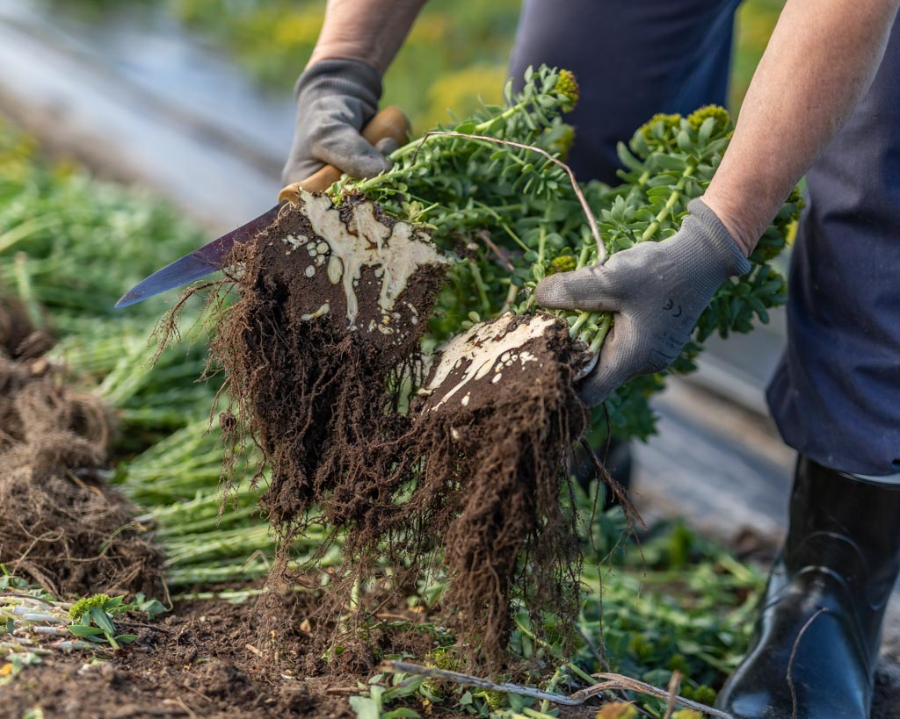
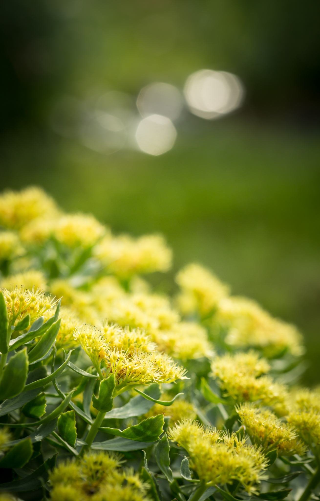
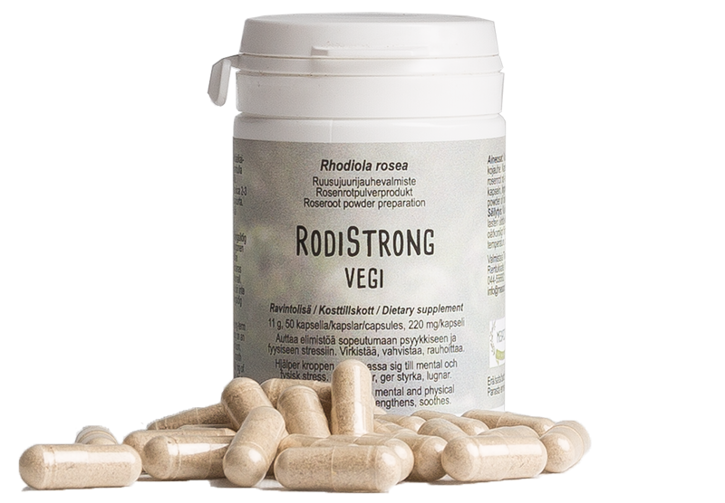
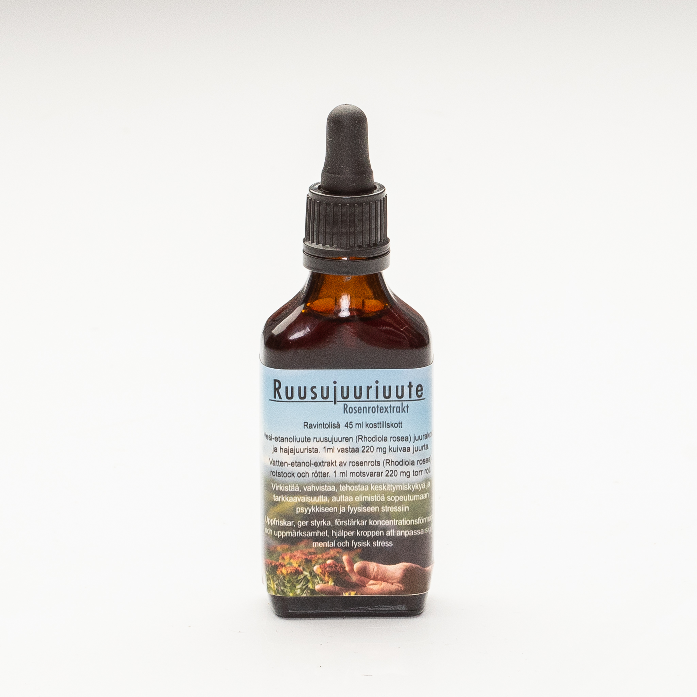

Perinne ja tutkimus
Ruusujuurta on käytetty vuosisatojen ajan ankarissa luonnonoloissa selviytymisen tukena. Mesacosin sivusto kertoo tieteellisen kiinnostuksen alkaneen entisessä Neuvostoliitossa 1960-luvulla.

Mesacos Oy / Ruusujuurimaailma
Ruusujuurituotteita, marjajauheita, uutteita ja voiteita omasta verkkokaupasta. Tämä testisivu kokoaa nykyisen Mesacos-sisällön selkeämmäksi ostajan poluksi.
Mikä ruusujuuri on?

Ruusujuurta on käytetty vuosisatojen ajan ankarissa luonnonoloissa selviytymisen tukena. Mesacosin sivusto kertoo tieteellisen kiinnostuksen alkaneen entisessä Neuvostoliitossa 1960-luvulla.

Ravintolisiin käytetään ruusujuuren maanalainen osa. Tuotteissa käytetään kokojuurijauhetta eli juurakkoa ja hajajuurta ilman lisäaineita.

Valikoimassa on kapseleita, ruusujuuri-nokkostuotteita, ruusujuuriuutetta, marjajauheita sekä ruusujuurivoiteita ulkoiseen käyttöön.
Tuotevalitsin
Nykyinen valikoima on laaja. Testiversio auttaa uutta kävijää etenemään muutaman selkeän valinnan kautta.
Suositeltu polku
RodiStrong on ruusujuurijauhevalmiste: 50 gelatiinikapselia, 220 mg ruusujuurijauhetta kapselissa. Hinta verkkokaupassa 23,00 euroa.
Suosituimmat ja selkeät aloitustuotteet

Ravintolisä: 11 g ruusujuurijauhevalmiste, 50 gelatiinikapselia, 220 mg kapselissa.

50 gelatiinikapselia. Kapselissa 210 mg ruusujuurijauhetta ja 110 mg nokkoslehtijauhetta.

100 g kuivattua, jauhettua tyrnimarjan marjalihaa, kuori- ja siemenosaa.

Ruusujuuriuute kylmäpuristetussa luomu-kookosöljyssä. 40 g.
Toimitus ja maksaminen
Tilaukset toimitetaan pikkupakettina tai postipakettina 2-6 arkipäivän kuluessa. Pikkupaketti maksaa 5,90 euroa ja paketti 6,60 euroa. Yli 60 euron tilaukset toimitetaan ilman toimituskuluja.
Maksuvälityksen toteuttaa Paytrail. Jos asiakas ei halua käyttää verkkomaksamista, tilauksen voi tehdä yhteydenottolomakkeella tai sähköpostilla ja maksaa ennakkolaskulla.
Mesacos Oy, Rentukkatie 17 B3, 90580 Oulu. Puhelin 044 55 66 821. Sähköposti info@mesacos.fi. Y-tunnus 2540714-9.
Nykyinen verkkokauppa tarjoaa uutiskirjeen tilauksen sähköpostiosoitteella. Testiversiossa se toimii liidipisteenä ennen varsinaista ostoa.
Uutiskirje ja ostamista tukeva sisältö
Nykyinen verkkokauppa kerää uutiskirjeen tilaajia. Testiversiossa sama kohta kertoo selkeämmin, mitä asiakas saa: apua RodiStrongin, Rodisanan, ROS-URTin, marjajauheiden ja voiteiden vertailuun.